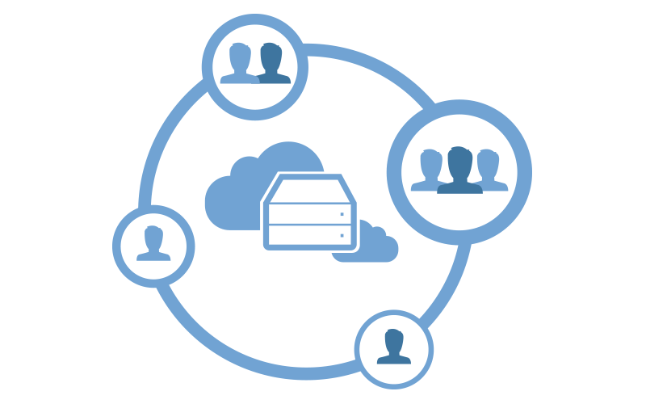

Developing applications with development teams of any size has been enhanced. Having a central Knowledge Base administered by a GeneXus Server any authorized developer can, from his stand alone development environment, post changes and receive changes from other developers. The conceptWriting software means lots of interaction among developers. Interaction, however, is not permanent. Developers need to 'process' each feature or fix on their own, somehow isolated from the crowd, someone else's changes to the Knowledge Base, etc. After finishing the process, a developer makes his or her changes public and notifies him or herself of changes published by other developers. The cycle, then, repeats itself. To implement the above cycle, a tool should provide an isolated development environment and a communication service. This is where GeneXus Server comes to play. Every developer works on its copy of a Knowledge Base (isolation) that is linked to a centralized copy of the same Knowledge Base administered by GeneXus Server (communication service).  Take a look at the GeneXus Server Installation Manual page for installation and configuration instructions before any further reading. Setting up a new developerYou will have to Create a Knowledge Base from GeneXus Server. Sending changesYou will use the Commit to GeneXus Server operation. Getting changes from other developersYou will use the Update From GeneXus Server operation. |